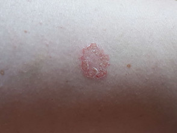

Nummular eczema 錢幣狀濕疹
Etiology and pathogenesis
- unclear，但有可能是一種 autosensitization to allergens or irritants
Epidemiology and risk factors
- Epidemiology
- 20 - 65 歲，三十幾歲最常見
- Risk factors
- contact dermatitis
- stress
- alcohol
Clinical presentation
- Symptoms and signs
- coin-shaped, itching lesion
- 常見於四肢，可能不太癢，也可能很癢

Diagnosis and workup
- Diagnosis
- clinically
- Workup
- 一般來說不需要
Management、Prognosis and follow up
- Management
- skin care：保濕乳液、避免接觸刺激物如肥皂、清潔劑
- topical steroid
- short course systemic steroid may be concerned in severe case
- dupilumab 可能可以改善症狀
- Prognosis
- 可能會反覆發生
- 乾燥或是溫暖的氣候可能會加劇